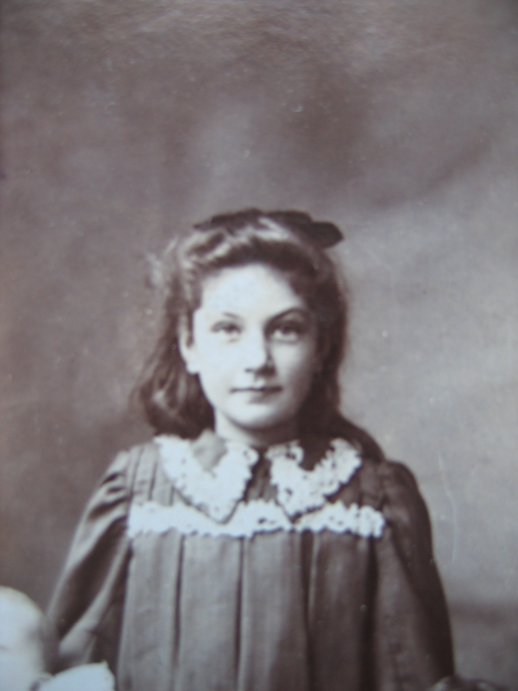
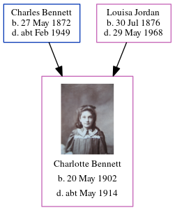

Charlotte Priscilla Bennett 1902 - c1914
[ Home ] | [ Calendar ] | [ Surnames Index ] | [ Census Index ] | [ Family History ]The eldest of 4 children of Charles Bennett (a brewer's drayman) and Louisa Jordan, Charlotte Bennett, the third cousin once-removed on the mother's side of Nigel Horne, was born in Canterbury, Kent, England on May 20, 19021,2,3 and baptized there at St Mildred on Jul 20, 1902. On Apr 2, 1911, she was living at Claremont Place in Canterbury1.
She died c. May 1914 in Faversham, Kent, England4.
Parents
- Charles John was born on May 27, 1872
- Louisa was born on Jul 30, 1876
Citations
- 1911 Census for England & Wales - Findmypast (was age 8 and the daughter of the head of the household)
- England & Wales births 1837-2006 - Findmypast
- Kent Baptisms - Findmypast
- England & Wales deaths 1837-2007 - Findmypast
Media
Charlotte Priscilla Bennett

England & Wales births 1837-2006 - BMD/B/1902/2/AZ/000046/371
Kent Baptisms - GBPRS/CANT/B/96603776
England & Wales deaths 1837-2007 - BMD/D/1914/2/AZ/000069/098
Family Tree
Generated by ged2site. Last updated on Jun 11, 2024